Part 1: Light Sampling
Integrator Implementation
See src folder
Shape Area Light Implementation
See src folder
Validation
Screenshots test results
See Part 3Comparison: rendering to reference images
 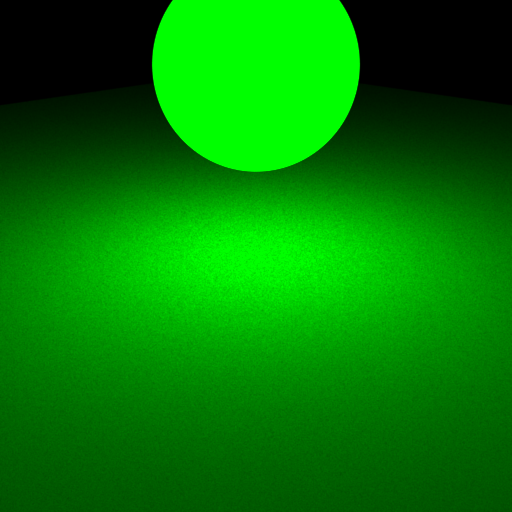
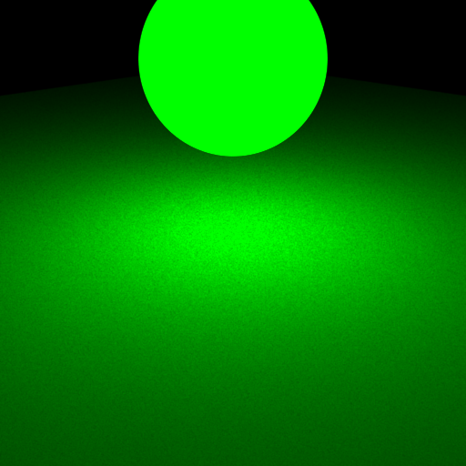
 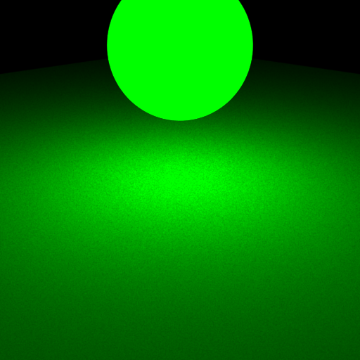
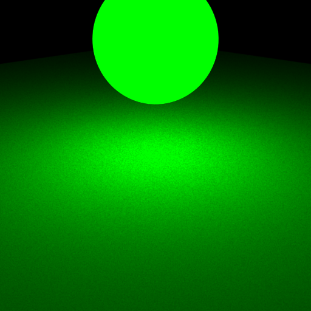
 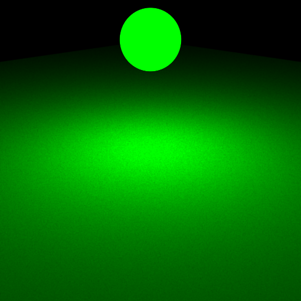
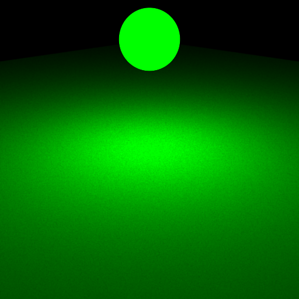
 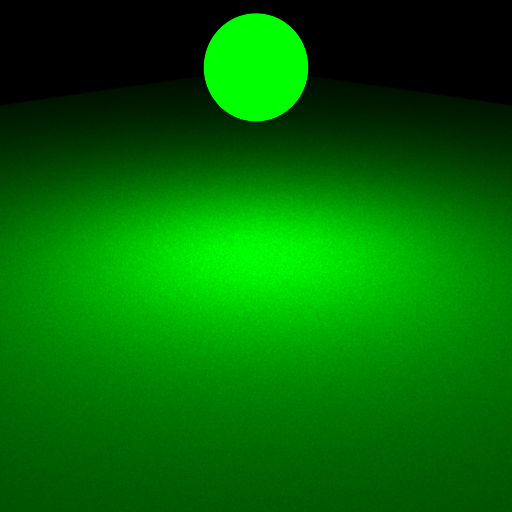
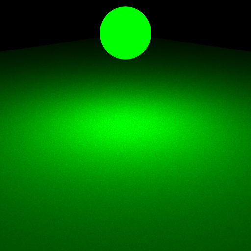
 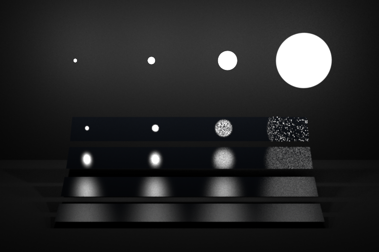
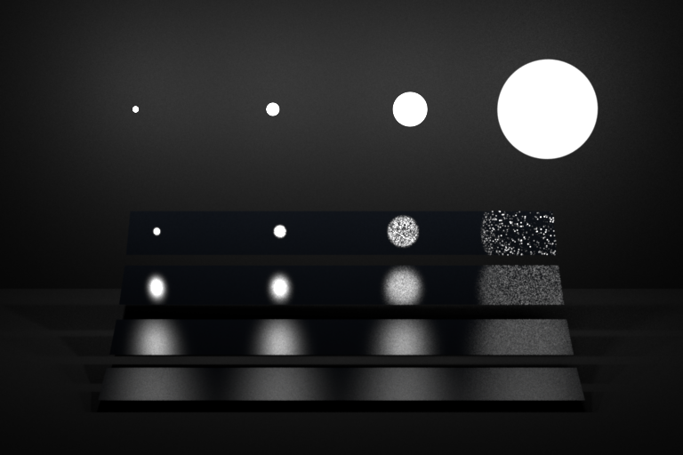
Part 2: BRDF Sampling
Integrator Implementation
See src folder
Microfacet BRDF Implementation
See src folder
Validation
Screenshots test results
chi2test-microfacet.xml
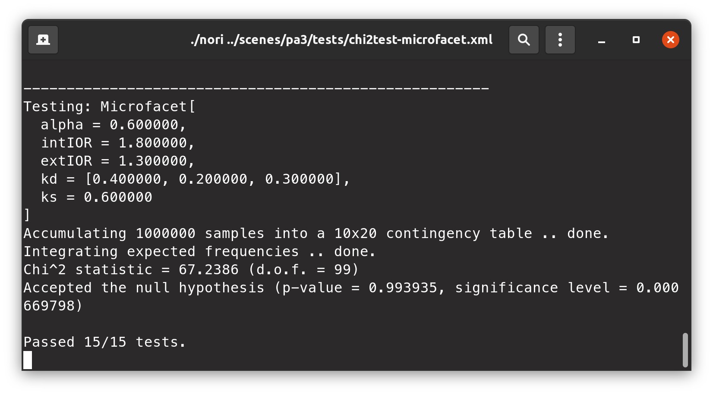ttest-microfacet.xml
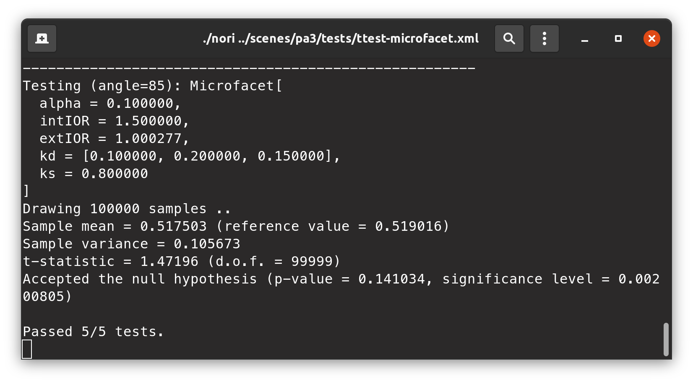 For test-mesh.xml and test-mesh-furnace.xml See Part 3Comparison: rendering to reference images


 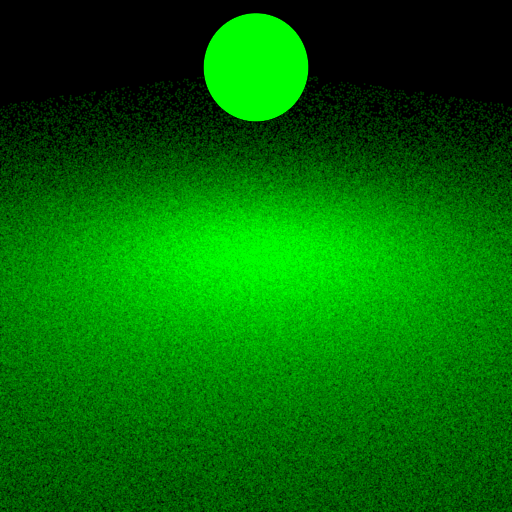
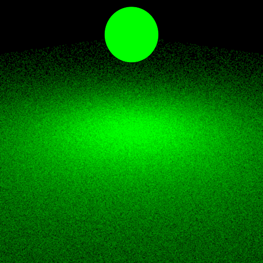
 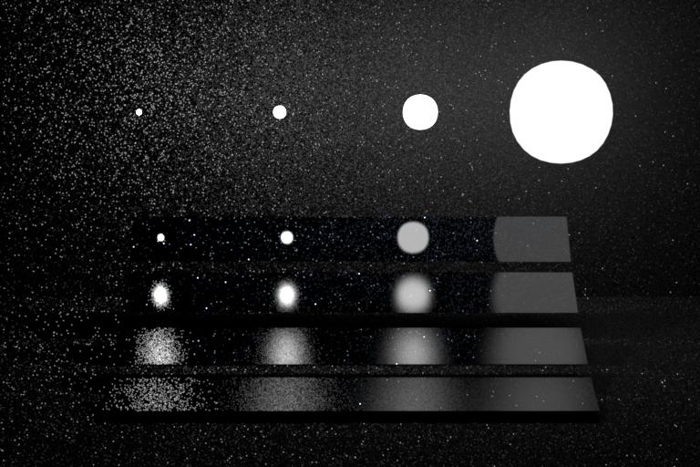
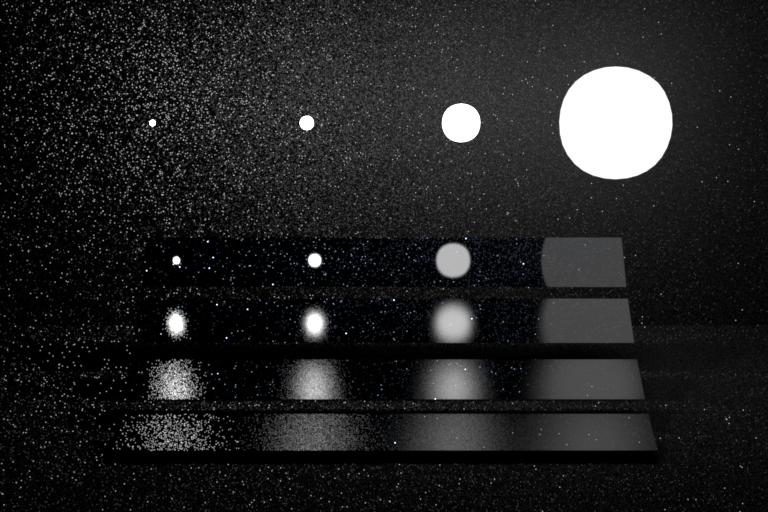
Part 3: Multiple Importance Sampling
Integrator Implementation
See src folder
Validation
Screenshots test results
test-mesh.xml
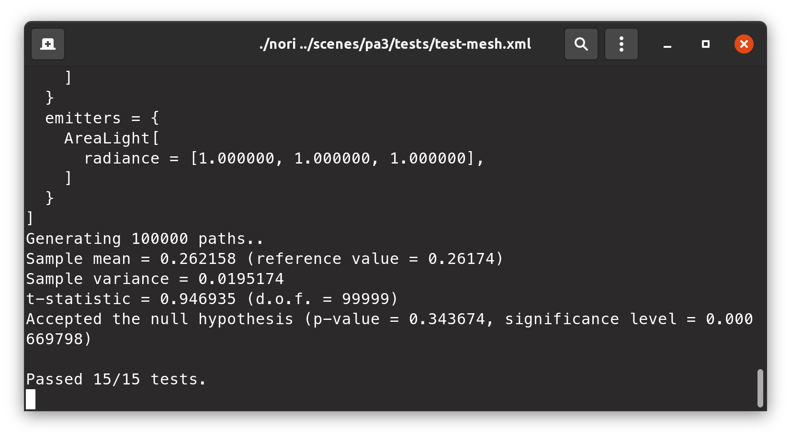test-mesh-furnace.xml
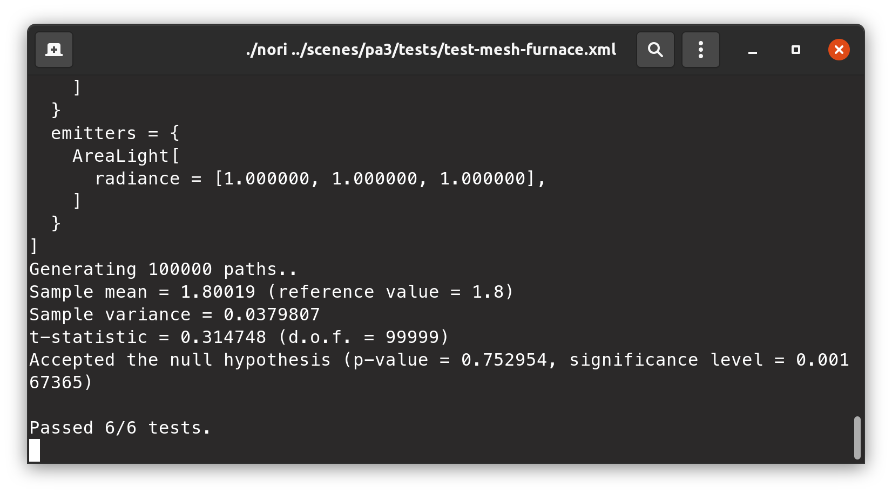Comparison: rendering to reference images
 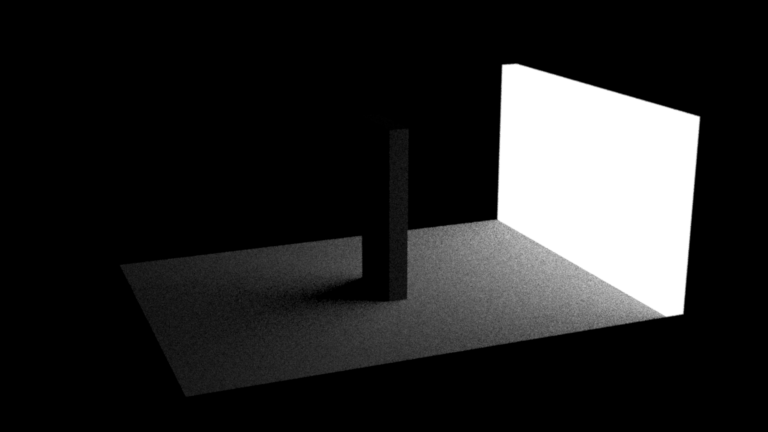
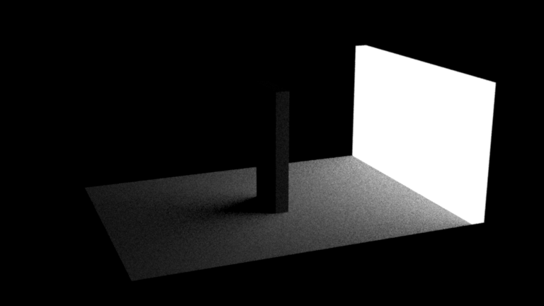
 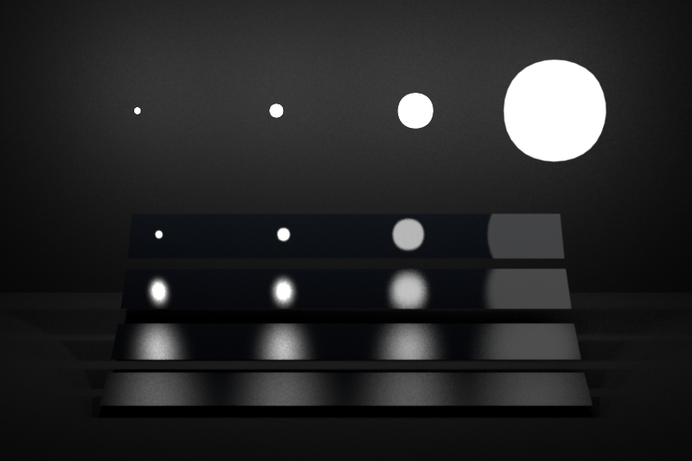
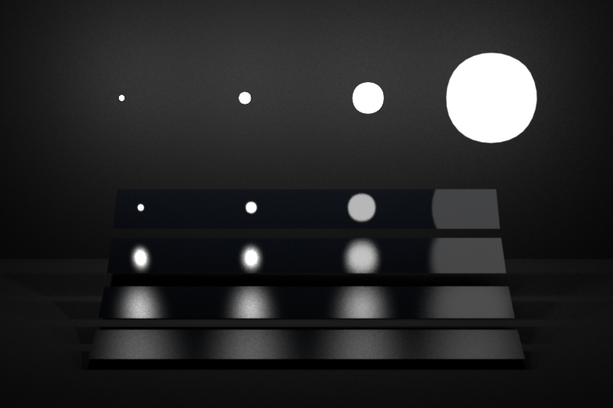
Image Validation
4-way comparison for each of the 2 scenes. Each scene compares 3 integrators (direct_ems, direct_mats, direct_mis) with the reference MIS rendering.